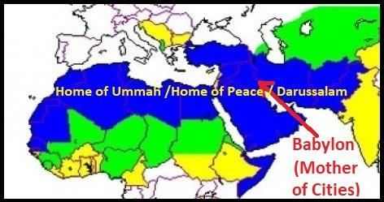

The Surah calls upon Muslims to follow the Quran and obey the leadership of Ahl al-Bayt in order to remain united and avoid sectarianism.
সূরাটি মুসলমানদেরকে কুরআন অনুসরণ করতে এবং আহলে বাইতের নেতৃত্বের আনুগত্য করতে আহ্বান জানিয়েছে যাতে ঐক্যবদ্ধ থাকতে এবং সাম্প্রদায়িকতা এড়ানো যায়।
Ha, Mim, Ain, Sin, Qaf. Thus, doth send inspiration to thee as to those before thee, Allah, Exalted in Power, Full of Wisdom; to Him belongs all that is in the Skies and Lands, and He is Most High, Most Great.
হা, মীম, আইন, গুনাহ, ক্বাফ। এইভাবে, আপনার কাছে ওহী পাঠান আপনার পূর্ববর্তীদের প্রতি, আল্লাহ, পরাক্রমশালী, প্রজ্ঞাময়। আকাশ ও জমিনে যা কিছু আছে সবই তাঁরই এবং তিনিই সর্বোচ্চ, সর্বশ্রেষ্ঠ।
The Skies are almost rent asunder from above them, and the angels celebrate the praises of their Lord and pray for forgiveness for beings on the Earth. Behold! Verily Allah is He, the Oft-Forgiving, Most Merciful.
আকাশ তাদের উপর থেকে প্রায় বিচ্ছিন্ন হয়ে গেছে, এবং ফেরেশতারা তাদের প্রভুর প্রশংসা উদযাপন করে এবং পৃথিবীর প্রাণীদের জন্য ক্ষমা প্রার্থনা করে। দেখো! নিশ্চয়ই আল্লাহ তিনি পরম ক্ষমাশীল, পরম দয়ালু।
We have discussed in Section-7 of Chapter-30 that the universe is contracting from the outermost sky. Ultimately, it will compact into a Big Crunch, destined to revive the universe.
আমরা অধ্যায়-30-এর ধারা-7-এ আলোচনা করেছি যে মহাবিশ্ব বাইরের আকাশ থেকে সংকুচিত হচ্ছে। শেষ পর্যন্ত, এটি একটি বিগ ক্রাঞ্চে কম্প্যাক্ট হবে, যা মহাবিশ্বকে পুনরুজ্জীবিত করবে।
―On the day when We will roll up the Skies (Universe) like the rolling up of the scroll for writings; as We originated the first creation, We shall reproduce it—a promise on Us; surely We will bring it about.‖ [Al Quran 21: 104] ―Did not they see that We come to the land (future Land of Judgment) reducing it (this universe) from its outer boundary (Seventh Sky)? Allah judges; there is no adjuster of His judgment, and He is swift, the reckoning.‖ [Al Quran 13: 41]
-যেদিন আমরা আকাশকে (মহাবিশ্ব) গুটিয়ে নেব লেখার জন্য স্ক্রোলের মতো; আমরা যেমন প্রথম সৃষ্টির উদ্ভব করেছি, আমরা এটিকে পুনরুত্পাদন করব-আমাদের প্রতি একটি প্রতিশ্রুতি; নিশ্চয়ই আমরা তা ঘটাব।'' [আল কুরআন 21:104] - তারা কি দেখেনি যে, আমরা (এই মহাবিশ্বকে) এর বাহ্যিক সীমানা (সপ্তম আকাশ) থেকে কমিয়ে ভূমিতে (ভবিষ্যত বিচারের ভূমি) আসি? আল্লাহ বিচার করেন; তাঁর বিচারের কোন সমন্বয়কারী নেই এবং তিনি দ্রুত হিসাব গ্রহণকারী।'' [আল কুরআন 13:41]
The present cycle of the universe is entering its final phase. The Day of Doom is near.
মহাবিশ্বের বর্তমান চক্র তার চূড়ান্ত পর্যায়ে প্রবেশ করছে। কিয়ামতের দিন ঘনিয়ে এসেছে।
And those who take as protectors others besides Him, Allah do watch over them, and thou are not the disposer of their affairs. Thus, have We sent by inspiration to thee an Arabic Qur'an that thou may warn the Mother of Cities and all around her. And warn of the Day of Assembly, of which there is no doubt—some will be in the Jannaat, and some in the Blazing Fire.
আর যারা তাঁকে বাদ দিয়ে অন্যদেরকে অভিভাবক হিসেবে গ্রহণ করে, আল্লাহ তাদের তত্ত্বাবধান করেন এবং আপনি তাদের বিষয়ের মীমাংসাকারী নন। এইভাবে, আমি আপনার কাছে প্রেরণা দিয়ে একটি আরবি কোরআন পাঠিয়েছি যাতে আপনি শহর ও তার চারপাশের মাদারকে সতর্ক করতে পারেন। এবং সমাবেশের দিন সম্পর্কে সতর্ক করুন, যার মধ্যে কোন সন্দেহ নেই- কিছু থাকবে জান্নাতে, আর কিছু থাকবে জ্বলন্ত আগুনে।
According to the above verses, the Quran was sent to warn the people of a particular area, as it says: ―Thus, have We sent by inspiration to thee an Arabic Qur'an that thou may warn the Mother of Cities and all around her.‖ Here ―Mother of Cities‖ is Babylon. ―all around her‖ are Arabian and Persian people. Thus, the primary area of the Quran spans from Morocco to the Pamirs, covering the regions where Arabs and Persians live. The area is called Darussalam (Home of Peace) in the Quran. In this Tafsir the area is often called Home of Ummah.
উপরের আয়াত অনুসারে, কুরআন একটি নির্দিষ্ট এলাকার মানুষকে সতর্ক করার জন্য পাঠানো হয়েছিল, যেমন এটি বলে: "এভাবে, আমরা আপনার কাছে অনুপ্রেরণা দ্বারা একটি আরবি কোরআন পাঠিয়েছি যাতে আপনি শহরগুলির মা এবং তার চারপাশের সকলকে সতর্ক করতে পারেন।" এখানে "মাদার অফ সিটিস" ব্যাবিলন। - তার চারপাশে - আরব এবং পারস্যের মানুষ। এইভাবে, কুরআনের প্রাথমিক ক্ষেত্রটি মরোক্কো থেকে পামির পর্যন্ত বিস্তৃত, যেখানে আরব এবং পারস্যরা বসবাস করে এমন অঞ্চলগুলিকে কভার করে। কোরানে এলাকাটিকে দারুসসালাম (শান্তির বাড়ি) বলা হয়েছে। এই তাফসিরে এলাকাটিকে প্রায়ই উম্মাহর বাড়ি বলা হয়।
FIGURE 42.1: Darussalam / Home of Peace / Home of Ummah

চিত্র 42_1 / Figure 42_1
চিত্র 42.1: দারুসসালাম / শান্তির বাড়ি / উম্মাহর বাড়ি
চিত্র 42_1 / Figure 42_1
The Home of Ummah (Darussalam / Morocco to the Pamirs) pertains to the method of preaching. Prophet (pbuh) was instructed through Furqan (chapter-3 to 9) to preach Islam within this area by defeating the Taghuts (Powers). The Prophet (pbuh) and his immediate followers swiftly defeated Roman and Persian Emperors, and the people of the area embraced Islam in mass. But the Quran is for all of mankind. According to the following verse, Islam is meant to be preached beyond the Home of Ummah by Sufis and Daees (preachers), and people should embrace Islam through understanding the Quran, as the following verses state: ―If it had been thy Lord's will, they would all have believed—all who are on earth! Will thou then compel mankind against their will, to believe! No soul can believe, except by the will of God, and He will place doubt on those who will not understand.‖ [Al Quran 10:99-100]
উম্মাহর বাড়ি (দারুসসালাম/মরোক্কো থেকে পামির) প্রচারের পদ্ধতির সাথে সম্পর্কিত। ফুরকানের (অধ্যায়-৩ থেকে ৯) মাধ্যমে নবী (সা.)-কে নির্দেশ দেওয়া হয়েছিল তাগুতদের (শক্তি) পরাজিত করে এই এলাকায় ইসলাম প্রচার করার জন্য। নবী (সাঃ) এবং তাঁর অনুসারীরা দ্রুত রোমান ও পারস্য সম্রাটদের পরাজিত করেন এবং এলাকার মানুষ ব্যাপকভাবে ইসলাম গ্রহণ করে। কিন্তু কুরআন সমগ্র মানবজাতির জন্য। নিম্নলিখিত আয়াত অনুসারে, ইসলাম বলতে বোঝানো হয়েছে উম্মাহর বাড়ীর বাইরে সুফি ও দায়িস (প্রচারকদের) দ্বারা প্রচার করা এবং মানুষের উচিত কুরআন বোঝার মাধ্যমে ইসলাম গ্রহণ করা, যেমনটি নিম্নলিখিত আয়াতে বলা হয়েছে: “যদি তোমার প্রভুর ইচ্ছা হত, তারা সবাই বিশ্বাস করত — পৃথিবীতে যারা আছে! তাহলে কি তুমি মানুষকে তাদের ইচ্ছার বিরুদ্ধে ঈমান আনতে বাধ্য করবে? ঈশ্বরের ইচ্ছা ব্যতীত কোন আত্মা বিশ্বাস করতে পারে না এবং যারা বোঝে না তাদের উপর তিনি সন্দেহ স্থাপন করবেন।'' [আল কুরআন 10:99-100]
The plan of Allah never fails. In reality, Islam was preached beyond the Home of Ummah, in places like India, Indonesia, and elsewhere, primarily by Sufis and Daees (preachers).
আল্লাহর পরিকল্পনা কখনো ব্যর্থ হয় না। বাস্তবে, ইসলাম ধর্ম উম্মাহর বাড়ীর বাইরে, ভারত, ইন্দোনেশিয়া এবং অন্যান্য জায়গায়, প্রাথমিকভাবে সুফি এবং দাঈস (প্রচারক) দ্বারা প্রচারিত হয়েছিল।
If Allah had so willed, He could have made them a single people, but He admits whom He wills to His Mercy; and the Wrongdoers will have neither protector nor helper.
যদি আল্লাহ ইচ্ছা করতেন, তবে তিনি তাদের একক জাতিতে পরিণত করতে পারতেন, কিন্তু তিনি যাকে ইচ্ছা তাঁর রহমতে দাখিল করেন; আর জালেমদের কোন অভিভাবক বা সাহায্যকারী থাকবে না।
The Home of Ummah (Darussalam / Morocco to the Pamirs) encompasses linguistically and culturally diverse peoples, primarily grouped into Arabs and Persians. However, Allah could have made them a single people, speaking the same language. But Allah has admitted them into His Mercy and has made them Muslims. Therefore, the wrongdoers who create division among Muslims by splitting them into factions, such as the Shia-Sunni divide, will have no protector or helper against Allah. But, fighting is not allowed to neutralize a sect (Firqa). The first paragraph of the section says: ―…thou art not the disposer of their affairs.‖ This means that if a group of people forms an alliance with a wrong leader, the highest Islamic leadership (Caliph) should not take action against them; Allah watches over them. He will judge.
উম্মাহর বাড়ি (দারুসসালাম/মরোক্কো থেকে পামির) ভাষাগত এবং সাংস্কৃতিকভাবে বৈচিত্র্যময় জনগণকে অন্তর্ভুক্ত করে, প্রাথমিকভাবে আরব এবং পারস্যদের মধ্যে বিভক্ত। যাইহোক, আল্লাহ তাদের একই ভাষায় কথা বলতে একক জাতি বানাতে পারতেন। কিন্তু আল্লাহ তাদেরকে স্বীয় রহমতের মধ্যে দাখিল করে মুসলমান বানিয়েছেন। অতএব, যারা শিয়া-সুন্নি বিভক্তির মতো দল-দলে বিভক্ত হয়ে মুসলমানদের মধ্যে বিভেদ সৃষ্টি করে, তাদের আল্লাহর বিরুদ্ধে কোনো রক্ষাকারী বা সাহায্যকারী থাকবে না। তবে, একটি সম্প্রদায়কে (ফিরকা) নিরপেক্ষ করার জন্য লড়াই করা অনুমোদিত নয়। অনুচ্ছেদের প্রথম অনুচ্ছেদে বলা হয়েছে: ''...আপনি তাদের বিষয়ের নিষ্পত্তিকারী নন।'' এর মানে হল যে, যদি একটি দল ভুল নেতার সঙ্গে জোট গঠন করে, তাহলে সর্বোচ্চ ইসলামী নেতৃত্ব (খলিফা) তাদের বিরুদ্ধে ব্যবস্থা নেবেন না; আল্লাহ তাদের উপর নজর রাখেন। তিনি বিচার করবেন।
What! Have they taken Awliya (guiding friends and protectors) besides Him? But, it is Allah! He is the Protector, and it is He Who gives life to the dead; it is He Who has power over all things. Whatever it be, wherein ye differ, the decision thereof is with Allah; such is Allah, my Lord; in Him I trust, and to Him I turn—the Creator of the Skies and Lands.
কি! তারা কি তাঁকে বাদ দিয়ে আউলিয়াকে (পথপ্রদর্শক বন্ধু ও অভিভাবক) গ্রহণ করেছে? কিন্তু, আল্লাহ! তিনিই অভিভাবক এবং তিনিই মৃতকে জীবিত করেন; তিনিই সব কিছুর উপর ক্ষমতাবান। যে বিষয়েই তোমাদের মতভেদ থাকুক না কেন, তার সিদ্ধান্ত আল্লাহর। তিনিই আল্লাহ, আমার পালনকর্তা। আমি তাঁর উপর ভরসা করি, এবং তাঁর দিকেই ফিরে যাই- আকাশ ও ভূমির স্রষ্টা।
The people in the Home of Ummah (Darussalam, extending from Morocco to the Pamirs) could be a single people with the same language and cultures, as the verses of the previous section say, ―If Allah had so willed, He could have made them a single people…‖ But Allah has made them different. A major part of the population speaks Arabic, while the rest primarily speak Farsi. However, they should not be divided or form alliance against each other with people from beyond the Home of Ummah, as the above verses state: ―What! Have they taken Awliya (guiding friends, helpers, and protectors) besides Him? But, it is Allah! He is the Protector, and it is He Who gives life to the dead; it is He Who has power over all things.‖ They are to follow the Quran to settle their disputes, as the subsequent verses state: ―Whatever it be, wherein ye differ, the decision thereof is with Allah‖ And if a dispute is not resolved, they should wait for Allah to decide (ceasing further action). In any case, a group cannot accept people from outside as Awliya to gain the upper hand in the Home of Ummah.
উম্মাহর গৃহের লোকেরা (দারুসসালাম, মরক্কো থেকে পামির পর্যন্ত বিস্তৃত) একই ভাষা এবং সংস্কৃতির একক মানুষ হতে পারে, যেমনটি আগের অংশের আয়াতে বলা হয়েছে, "আল্লাহ যদি ইচ্ছা করতেন তবে তিনি তাদের একক জাতি বানাতে পারতেন..." কিন্তু আল্লাহ তাদের আলাদা করেছেন। জনসংখ্যার একটি বড় অংশ আরবি ভাষায় কথা বলে, বাকিরা প্রাথমিকভাবে ফার্সি ভাষায় কথা বলে। যাইহোক, তাদের বিভক্ত হওয়া উচিত নয় বা উম্মাহর ঘরের বাইরের লোকদের সাথে একে অপরের বিরুদ্ধে জোট গঠন করা উচিত নয়, যেমন উপরের আয়াতে বলা হয়েছে: - কি! তারা কি তাকে বাদ দিয়ে আউলিয়াকে (পথপ্রদর্শক বন্ধু, সাহায্যকারী ও অভিভাবক) গ্রহণ করেছে? কিন্তু, আল্লাহ! তিনিই অভিভাবক এবং তিনিই মৃতকে জীবিত করেন; তিনিই সকল কিছুর উপর ক্ষমতাবান।'' তাদের বিরোধ নিষ্পত্তির জন্য কুরআনকে অনুসরণ করতে হবে, যেমন পরবর্তী আয়াতে বলা হয়েছে: ''তোমরা যে বিষয়ে মতপার্থক্য কর না কেন, তার সিদ্ধান্ত আল্লাহর কাছে'' এবং যদি কোনো বিরোধ নিষ্পত্তি না হয়, তবে আল্লাহর সিদ্ধান্তের জন্য তাদের অপেক্ষা করা উচিত (পরবর্তী পদক্ষেপ বন্ধ করে)। কোনো অবস্থাতেই উম্মাহর ঘরে আধিপত্য অর্জনের জন্য একটি দল বাইরের লোকদের আউলিয়া হিসেবে গ্রহণ করতে পারে না।